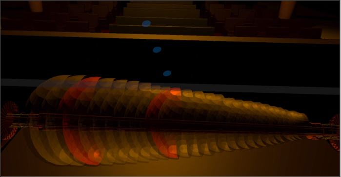

システムの特徴
- 触れるべき鍵盤を視覚的にハイライト表示
- 触れるべきタイミングを直感的に表現
- 楽譜をCVSファイルで読み込む
動作画面

構成要素
このシステムは、以下の要素で構成されています。
GakufuController
このクラスは、主に楽譜の進行を管理します。
public class GakufuController : MonoBehaviour
{
void Start()
{
notes = new List();
isPlaying = false;
fileName = "Tutorial.csv";
}
// Update is called once per frame
void Update()
{
if (isPlaying)
// isPlaying が true であるなら：
{
time += Time.deltaTime;
if (notes[0].start < time)//注目している音符の開始時刻を過ぎたら
{
changeController.ChangeColor(notes[0].note, notes[0].duration);
notes.RemoveAt(0);
}
if (notes.Count == 0)
{
isPlaying = false;
}
}
}
public void GetTime(int disk)
{
List times = new List();
for (int i = 0; i < notes.Count; i++)
{
if (notes[i].note == disk)
{
if (notes[i].start > time)
{
times.Add(notes[0].start - time);
}
else
{
times.Add(time - notes[0].start);
}
}
}
judgement.TimeJudge(times);
}
void ReadFromFile(string filename)
{
// CSV 形式のファイルから読み込み
StreamReader sr = new StreamReader(Application.persistentDataPath + @"/" + @filename);
int i = 0;
while (!sr.EndOfStream)
{
string line = sr.ReadLine();
if (i == 0)
{
//1行目取得
string[] cols = line.Split(',');
i += 1;
continue;
}
else
{
//カンマで分ける
string[] values = line.Split(',');
//それぞれ型変換
int noteNumber = int.Parse(values[0]);
float startTime = float.Parse(values[1]);
float durationTime = float.Parse(values[2]);
bool playCheck = false;
// notesに格納する
notes.Add( new Note(noteNumber, startTime, durationTime, playCheck));
}
}
}
public void StartPlaying()
{
time = -3.5f;
isPlaying = true;
ReadFromFile(fileName);
}
public void StopPlaying()
{
time = 0;
notes.Clear();
isPlaying = false;
}
public List GetNewNotes()
{
List result = new List();
for (int i=0; i < notes.Count; i++)
{
Note n = notes[i];
if (!n.play && n.start < time+3.5f)
{
result.Add(n);
notes[i].play = true;
}
}
return result;
}
}
※長文のため、宣言等は省略しています。
Guider
このクラスは、GakufuContorllerから送られた1音をガイドします。
public class Guider : MonoBehaviour
{
void Start()
{
Instantiate(obj1, new Vector3(-0.14f, 1.2f, 2.2f), Quaternion.identity);
sponeupposy = 0.3f;
kenbans = 24;
Vector3 v = startpos.transform.position;
kenban = new List();
for (int i=0; i < kenbans; i++)
{
kenban.Add(new Vector3(v.x - i*0.03f, v.y, v.z));
}
}
// Update is called once per frame
void Update()
{
List ns = gakufuController.GetNewNotes();
if (ns.Count == 1)
cardNameText.text = ns.ToString();
foreach(Note n in ns)
{
Onpu(n.note);
}
}
void Onpu(int disk)
{
if (-1 < disk && disk < 24)
{
Vector3 kenbanpos = kenban[disk];
kenbanpos.y += sponeupposy;
Instantiate(obj1, new Vector3(kenbanpos.x, kenbanpos.y, kenbanpos.z), Quaternion.identity);
Debug.Log(disk + "MakeOnpu");
}
else
{
Debug.Log(disk + "Unknow");
}
}
}
ChangeController
このクラスは、GakufuContorllerから送られた鍵盤を光らせます。
public class ChangeController : MonoBehaviour
{
int DISK_COUNT = 24;
public bool[] isPlaying;
bool isRotating;
public GameObject[] kenban;
public GameObject armonicaBody;
Vector3 rotationVelocity = Vector3.right * 3.0f;
public float rotationAcceleration = 0.2f;
public Material[] _material;
// 割り当てるマテリアル.
void Start()
{
isPlaying = new bool[DISK_COUNT];
isRotating = false;
for(int i=0; i < DISK_COUNT; i++)
isPlaying[i] = false;
}
// Update is called once per frame
void Update()
{
Rigidbody rb = armonicaBody.GetComponent();
Vector3 currentRotationVelocity = rb.angularVelocity;
if(isRotating)
{
rb.AddTorque( (rotationVelocity-currentRotationVelocity) * rotationAcceleration );
}
else
{
rb.AddTorque( (-currentRotationVelocity) * rotationAcceleration * 2 );
}
}
public void ChangeColor(int disk, float duration)
{
kenban[disk].GetComponent().material = _material[1];
StartCoroutine(ResetColor(disk, duration));
isPlaying[disk] = true;
}
IEnumerator ResetColor(int disk, float duration)
{
yield return new WaitForSeconds(duration);
kenban[disk].GetComponent().material = _material[0];
isPlaying[disk] = false;
}
public void StartRotation()
{
isRotating = true;
}
public void StopRotation()
{
isRotating = false;
}
}
OnpuController
このクラスは、GakufuContorllerから送られた鍵盤を光らせます。
public class OnpuScript : MonoBehaviour
{
public float velocity;
Rigidbody rb;
void Start()
{
rb = GetComponent();
rb.velocity = new Vector3(0, -velocity, 0);
}
void OnTriggerEnter(Collider other)
{
if (other.gameObject.tag == "OnpuDeleteBox")
{
Destroy(this.gameObject);
}
}
}